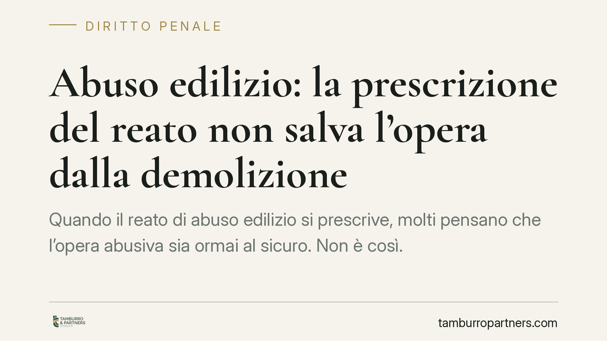

Abuso edilizio: la prescrizione del reato non salva l'opera dalla demolizione
Quando il reato di abuso edilizio si prescrive, molti pensano che l'opera abusiva sia ormai al sicuro. Non è così. La prescrizione estingue solo la responsabilità penale, ma lascia intatto l'ordine di demolizione, che è una sanzione amministrativa senza scadenza. Un principio consolidato che vincola anche eredi e acquirenti dell'immobile.

Il fatto e perché conta
Chi realizza una costruzione senza titolo abilitativo commette due illeciti distinti: uno penale, punito dall'articolo 44 del D.P.R. 380/2001 (Testo Unico dell'Edilizia), e uno amministrativo, che impone la rimozione dell'opera.
Il punto critico è questo: il reato edilizio si prescrive in tempi relativamente brevi. Quando la prescrizione matura, il responsabile non può più essere condannato penalmente. Ma la casa, il garage o la tettoia abusiva restano dove sono. E qui entra in gioco una regola che sorprende molti proprietari: la prescrizione penale non cancella l'obbligo di demolire.
Inquadramento normativo
L'articolo 44 del D.P.R. 380/2001 sanziona penalmente l'esecuzione di opere in assenza o in difformità dal permesso di costruire. Si tratta di un reato contravvenzionale, soggetto quindi a termini di prescrizione contenuti (di norma quattro anni, estensibili a cinque con atti interruttivi).
Accanto alla sanzione penale opera però l'ordine di demolizione, disciplinato dagli articoli 31 e seguenti dello stesso Testo Unico. La Corte di Cassazione ha chiarito in modo costante che questo ordine ha natura di sanzione amministrativa e non penale.
La conseguenza è netta: l'illecito amministrativo è autonomo rispetto al reato. L'ordine di demolizione del Comune non segue le regole della prescrizione penale e, secondo l'orientamento prevalente, non è soggetto ad alcun termine di estinzione. Il provvedimento comunale può arrivare anche a distanza di molti anni dalla costruzione, perché l'abuso edilizio è considerato un illecito di carattere permanente: dura finché l'opera resta in piedi.
Cosa cambia per chi possiede un immobile
Le implicazioni pratiche sono rilevanti e spesso sottovalutate.
Per il responsabile dell'abuso: l'archiviazione o il proscioglimento per prescrizione in sede penale non mette al riparo dall'ordine di demolizione. Si può uscire indenni dal processo penale e ricevere comunque l'ingiunzione a demolire a proprie spese, con il rischio di demolizione d'ufficio e acquisizione gratuita al patrimonio comunale in caso di inottemperanza.
Per gli eredi: l'obbligo di demolizione non si estingue con la morte di chi ha realizzato l'abuso. Chi eredita un immobile eredita anche la sua condizione di irregolarità. La giurisprudenza riconosce che l'ordine può essere rivolto all'erede in quanto attuale proprietario, a prescindere dal fatto che l'abuso sia stato commesso da altri.
Per gli acquirenti: chi compra un immobile con abusi non sanati acquista anche il problema. L'ordine di demolizione segue il bene, non la persona che ha costruito. È per questo che la verifica della regolarità urbanistica prima di un acquisto non è una formalità, ma una tutela essenziale.
Il tempo non sana l'abuso
Un equivoco frequente riguarda l'idea che il trascorrere degli anni possa "legittimare" l'opera. Non è così. L'inerzia del Comune nel vietare o reprimere l'abuso non crea alcun affidamento tutelabile. La Cassazione e la giurisprudenza amministrativa escludono che il mero decorso del tempo trasformi un'opera abusiva in un'opera legittima.
L'unica via per regolarizzare resta la sanatoria, dove ammessa dalla legge e solo in presenza dei requisiti previsti (in particolare la cosiddetta doppia conformità). Fuori da questi casi, l'opera resta abusiva e demolibile.
Cosa fare in concreto
- Verificate la regolarità urbanistica prima di acquistare: richiedete la documentazione edilizia completa e confrontatela con lo stato dei luoghi.
- Non confidate nella prescrizione penale: anche se il reato è estinto, l'ordine di demolizione resta pienamente efficace.
- Valutate subito la possibilità di sanatoria: consigliamo di accertare la sussistenza dei requisiti di legge con un tecnico abilitato e un parere legale specifico.
- Reagite tempestivamente ai provvedimenti comunali: l'ingiunzione a demolire è impugnabile entro termini stringenti davanti al giudice amministrativo.
- Se avete ereditato un immobile, fate una due diligence urbanistica: potreste essere destinatari di un ordine relativo ad abusi risalenti.
Disclaimer
Contributo informativo a cura di Tamburro & Partners - Avv. Giuseppe Tamburro. Non costituisce parere legale.
Ogni condominio ha una storia a sé.
Se gestisci un'amministrazione e vuoi un confronto su una specifica questione condominiale, scrivi allo studio. Ti rispondiamo entro un giorno lavorativo.